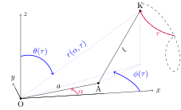
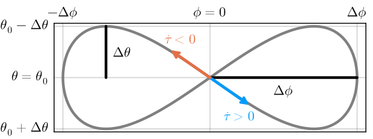
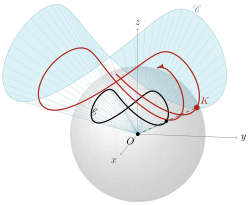
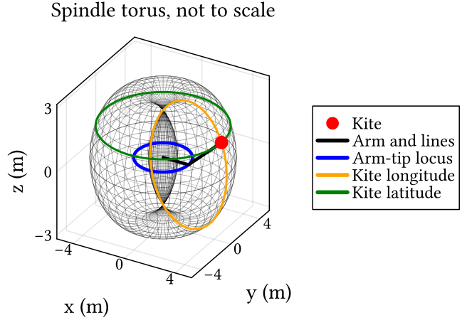

1 Mathematical model of KEEP
1.1 Geometry of the configuration
The system, depicted in Fig. 1, consists of a rigid arm \(OA\) of length \(a\), rotating in the horizontal plane about the vertical axis \(\Delta = (O,\vu z)\), and of a kite \(K\) attached to the tip \(A\) of the arm by lines of fixed length \(\ell\). We use a direct orthonormal frame \((O,\vu x,\vu y,\vu z)\), where \(\vu x\) and \(\vu z\) point respectively downwind and upward. For a better handling of the kite, the lines are longer than 10 m, while the arm is 2 m long, so that \begin{equation} \tag{1} \ell > a. \end{equation} The position of the arm tip is \begin{equation} \vb a = a\,\vu a(\alpha), \qquad \vu a(\alpha) = \begin{pmatrix} \cos\alpha \\ \sin\alpha \\ 0 \end{pmatrix}, \tag{2}\end{equation} where \(\alpha\in\mathbf{S}^1\) is the angle of the arm with the \(x\)-axis. As \(\alpha\) varies, \(A\) runs along the horizontal circle \(\mathscr{A}\) of centre \(O\) and radius \(a\). The position of the kite, \(\vb r\), is restricted by two geometric constraints of a different nature: a prescribed one, which forces the kite to fly along a figure eight, and a mechanical one, due to the arm and the lines.

Code that produced this figure
figs/configuration.tex, see also the full file.
\documentclass{standalone}
\usepackage[dvipsnames]{xcolor}
\usepackage{tikz}
\usetikzlibrary{3d}
\usepackage{tikz-3dplot}
\begin{document}
% Set main 3D view (z-up, y-in)
\tdplotsetmaincoords{70}{-10}
\begin{tikzpicture}[tdplot_main_coords, scale=2]
% ==== ORIGIN AND AXES ====
\coordinate (O) at (0,0,0);
\node[circle,fill,inner sep=1pt] at (O) {};
\node[below] at (O) {O};
\draw[->] (0,0,0) -- (3,0,0) node[anchor=west]{$x$};
\draw[->] (0,0,0) -- (0,1,0) node[anchor=south]{$y$};
\draw[->] (0,0,0) -- (0,0,2) node[anchor=west]{$z$};
% ==== POINT A IN XY-PLANE ====
\def\a{2}
\def\alphaA{20}
\pgfmathsetmacro{\xA}{\a*cos(\alphaA)}
\pgfmathsetmacro{\yA}{\a*sin(\alphaA)}
\coordinate (A) at (\xA, \yA, 0);
\node[circle,fill,inner sep=1pt] at (A) {};
\node[below] at (A) {A};
% Projections of A
\coordinate (Ax) at (\xA, 0, 0);
\coordinate (Ay) at (0, \yA, 0);
% Lines from O
\draw (O) -- (A) node[midway, sloped, above] {$a$};
\draw (O) -- (Ax);
\draw (O) -- (Ay);
% ==== POINT K ====
\def\l{2}
\def\thetaZero{70}
\def\DeltaTheta{5}
\def\DeltaPhi{30}
\def\tauK{90}
\pgfmathdeclarefunction{thetaFunc}{1}{\pgfmathparse{\thetaZero + \DeltaTheta * sin(2*#1)}}
\pgfmathdeclarefunction{phiFunc}{1} {\pgfmathparse{\DeltaPhi * sin(#1)}}
\pgfmathdeclarefunction{xTauFunc}{1} {\pgfmathparse{sin(thetaFunc(#1)) * cos(phiFunc(#1))}}
\pgfmathdeclarefunction{yTauFunc}{1} {\pgfmathparse{sin(thetaFunc(#1)) * sin(phiFunc(#1))}}
\pgfmathdeclarefunction{zTauFunc}{1} {\pgfmathparse{cos(thetaFunc(#1))}}
\pgfmathsetmacro{\dotprod}{\xA * xTauFunc(\tauK) + \yA * yTauFunc(\tauK)}
\pgfmathsetmacro{\rK}{\dotprod + sqrt(\dotprod * \dotprod + \l^2 - \a^2)}
\pgfmathsetmacro{\xK}{\rK * xTauFunc(\tauK)}
\pgfmathsetmacro{\yK}{\rK * yTauFunc(\tauK)}
\pgfmathsetmacro{\zK}{\rK * zTauFunc(\tauK)}
\coordinate (K) at (\xK, \yK, \zK);
\coordinate (K_xy) at (\xK, \yK, 0);
% Helper points from A
\pgfmathsetmacro{\xAel}{\xA}
\pgfmathsetmacro{\yAel}{\yA}
\pgfmathsetmacro{\zAel}{1.5}
\coordinate (A_el) at (\xAel, \yAel, \zAel);
\pgfmathsetmacro{\xAext}{1.5*\xA}
\pgfmathsetmacro{\yAext}{1.5*\yA}
\coordinate (A_ext) at (\xAext, \yAext, 0);
% Draw K and lines
\node[circle,fill,inner sep=1pt] at (K) {};
\node[above] at (K) {K};
\draw (A) -- (K) node[midway, sloped, below] {$\ell$};
\draw[dotted, blue] (O) -- (K) node[pos=0.5, sloped, above] {$r(\alpha, \tau)$};
%\draw[dotted] (A) -- (A_ext);
\draw[dotted] (K) -- (K_xy) -- (A);
\draw[dotted, blue] (K_xy) -- (O);
%\draw[dotted] (A) -- (A_el);
% ==== ANGLES ====
% alpha
\tdplotdefinepoints(0,0,0)(1,0,0)(\xA,\yA,0)
\tdplotdrawpolytopearc[->, OrangeRed, thick]{1.3}{right, OrangeRed}{$\alpha$}
% phi
\tdplotdefinepoints(0,0,0)(1,0,0)(\xK,\yK,0)
\tdplotdrawpolytopearc[->, blue, thick]{2.7}{above right, blue}{$\phi(\tau)$}
% theta
\tdplotdefinepoints(0,0,0)(0,0,1)(\xK,\yK,\zK)
\tdplotdrawpolytopearc[->, blue, thick]{1}{above, blue}{$\theta(\tau)$}
% % phi_ℓ
% \tdplotdefinepoints(\xA,\yA,0)(\xAext,\yAext,0)(\xK,\yK,0)
% \tdplotdrawpolytopearc[->]{1}{anchor=south west}{$\phi_\ell$}
% % theta_ℓ
% \tdplotdefinepoints(\xA,\yA,0)(\xAel,\yAel,\zAel)(\xK,\yK,\zK)
% \tdplotdrawpolytopearc[->]{0.8}{anchor=north}{$\theta_\ell$}
\newcommand{\KCoord}[2]{({#1 * xTauFunc(#2)}, {#1 * yTauFunc(#2)}, {#1 * zTauFunc(#2)})}
% tau and eight
\draw[domain = 0:360, samples = 20, smooth, dashed, variable = \t]
plot (\KCoord{\rK}{\t});
\draw[->, domain = 0:\tauK, samples = 10, smooth, OrangeRed, thick, variable = \t]
plot (\KCoord{\rK}{\t});
\node[below, OrangeRed] at \KCoord{\rK}{\tauK/2} {$\tau$};
\end{tikzpicture}
\end{document}Let \(\vu r(\tau)\in\mathbf{S}^2\) be the point of the unit sphere with polar angle \(\theta(\tau)\) and azimuth \(\phi(\tau)\), \begin{equation} \tag{3} \vu r(\tau) = \begin{pmatrix} \sin\theta(\tau)\cos\phi(\tau) \\ \sin\theta(\tau)\sin\phi(\tau) \\ \cos\theta(\tau) \end{pmatrix}, \end{equation} where \begin{equation} \tag{4} \theta(\tau) = \theta_0 + \Delta\theta \sin(2\tau), \qquad \phi(\tau) = \Delta\phi \sin\tau, \qquad \tau\in\mathbf{S}^1. \end{equation} The curve \(\mathscr{E} = \vu r(\mathbf{S}^1)\) is a figure eight drawn on \(\mathbf{S}^2\) (Figs. 2 and 3). It is centred at the point of polar angle \(\theta_0\) in the vertical plane \((O,\vu x,\vu z)\) that contains the wind, and its shape is controlled by two amplitudes: \(\Delta\phi\) is its half-width in azimuth, and \(\Delta\theta\) its half-height in polar angle. We assume \(\Delta\theta>0\), \(0<\Delta\phi<\pi\) and \(0<\theta_0-\Delta\theta<\theta_0+\Delta\theta<\pi/2\), so that the eight lies in the upper hemisphere. Then \(\mathscr{E}\) is a regular closed curve: its speed \(v = \norm{\vu r'}\), given by \begin{equation} v^2 = 4\Delta\theta^2\cos^2 2\tau + \Delta\phi^2\sin^2\theta\cos^2\tau, \tag{5}\end{equation} does not vanish, since \(\cos\tau\) and \(\cos2\tau\) never vanish together. It has a single double point, its centre \(\vu r(0) = \vu r(\pi)\), where the kite crosses the plane of the wind. Indeed, \(\vu r(\tau_1) = \vu r(\tau_2)\) with \(\tau_1\neq\tau_2\) requires \(\sin\tau_1 = \sin\tau_2\) (as \(\Delta\phi<\pi\)), i.e. \(\tau_2 = \pi-\tau_1\), and then \(\sin2\tau_1 = \sin2\tau_2 = -\sin2\tau_1\), i.e. \(\{\tau_1,\tau_2\} = \{0,\pi\}\).

Code that produced this figure
src/modelling.jl (region eight_plot), see also the full file.
## Parametrisation in tau
τ_φ = 90.0
τ_θ = 225.0
dx, dy = 1 / 4, 1 / 2
up_col, down_col = 1, 2
τ = range(0, 360, length=501)
θ = τ -> sind(2 * τ)
φ = τ -> sind(τ)
plot(xmirror=true)
plot!(xticks=([-1, 0, 1], (raw"$-Δφ$", raw"$φ = 0$", raw"$Δφ$")),
yticks=([-1, 0, 1], (raw"$θ_0 + Δθ$", raw"$θ = θ_0$", raw"$θ_0 - Δθ$"))
)
plot!(φ.(τ), θ.(τ), c=:grey)
plot!(φ.([0, τ_φ]), θ.([τ_φ, τ_φ]), color=:black)
annotate!(sum(φ.([0, τ_φ])) / 2, sum(θ.([τ_φ, τ_φ])) / 2 - 0.1, (raw"$Δφ$", ANNOTATIONFONTSIZE, :black, :top))
plot!(φ.([τ_θ, τ_θ]), θ.([τ_θ, 0]), color=:black)
annotate!(sum(φ.([τ_θ, τ_θ])) / 2 + 0.05, sum(θ.([τ_θ, 0])) / 2, (raw"$Δθ$", ANNOTATIONFONTSIZE, :black, :left))
quiver!([0], [0], quiver=([dx], [-dy]), c=up_col)
quiver!([0], [0], quiver=([-dx], [dy]), c=down_col)
annotate!(dx - 0.05, -dy - 0.25, (raw"$\dot{\tau} > 0$", ANNOTATIONFONTSIZE, :center, PALETTE[up_col]))
annotate!(-dx + 0.05, dy + 0.25, (raw"$\dot{\tau} < 0$", ANNOTATIONFONTSIZE, :center, PALETTE[down_col]))
plot!(size=SIZE_HALF .* (1, 0.5), topmargin=1Plots.mm, leftmargin=5Plots.mm)
append!(files, save_figure(current(), "eight_plot"))The kite is constrained to fly on the conical hull of the eight, \begin{equation} \mathscr{C} = \{\, r\,\vu r(\tau) \mid r>0,\ \tau\in\mathbf{S}^1 \,\}, \tag{6}\end{equation} a cone of vertex \(O\) whose generators are the rays through the points of \(\mathscr{E}\). It is a ruled, developable surface (see Section 4.3), smooth away from \(O\) and from the ray through the centre of the eight, along which it crosses itself.

Code that produced this figure
figs/cone_eight.tex, see also the full file.
\documentclass[tikz,border=2pt]{standalone}
\usepackage[dvipsnames]{xcolor}
\usepackage{mathrsfs}
\usepackage{tikz-3dplot}
\begin{document}
% Cone over the spherical eight, and a kite trajectory drawn on it (not to scale).
\tdplotsetmaincoords{78}{100}
\begin{tikzpicture}[tdplot_main_coords, scale=2.4, line join=round]
% ---- parameters (angles in degrees; exaggerated for readability) ----
\def\thetaZero{55} \def\DeltaTheta{16} \def\DeltaPhi{42}
\def\ell{1.9} \def\a{0.7} \def\Rmax{2.9}
\pgfmathdeclarefunction{thf}{1}{\pgfmathparse{\thetaZero + \DeltaTheta*sin(2*#1)}}
\pgfmathdeclarefunction{phf}{1}{\pgfmathparse{\DeltaPhi*sin(#1)}}
\pgfmathdeclarefunction{ux}{1}{\pgfmathparse{sin(thf(#1))*cos(phf(#1))}}
\pgfmathdeclarefunction{uy}{1}{\pgfmathparse{sin(thf(#1))*sin(phf(#1))}}
\pgfmathdeclarefunction{uz}{1}{\pgfmathparse{cos(thf(#1))}}
% arm angle along the orbit (any smooth law; only the shape of r matters here)
\pgfmathdeclarefunction{alf}{1}{\pgfmathparse{40 + 60*sin(#1) + 0.14*#1}}
\pgfmathdeclarefunction{pf}{1}{\pgfmathparse{\a*sin(thf(#1))*cos(phf(#1)-alf(#1))}}
\pgfmathdeclarefunction{rf}{1}{\pgfmathparse{pf(#1) + sqrt(pf(#1)*pf(#1) + \ell*\ell - \a*\a)}}
% ---- axes ----
\draw[->,gray] (0,0,0) -- (1.5,0,0) node[below left,black]{$x$};
\draw[->,gray] (0,0,0) -- (0,1.5,0) node[right,black]{$y$};
\draw[->,gray] (0,0,0) -- (0,0,1.6) node[above,black]{$z$};
% ---- the unit sphere carrying the eight (very light) ----
\begin{scope}[tdplot_screen_coords]
\shade[ball color=gray!35,opacity=0.28] (0,0) circle (1);
\draw[gray!55,opacity=0.5,thin] (0,0) circle (1);
\end{scope}
\foreach \p in {-60,-30,...,60}{
\draw[gray!60,opacity=0.35,very thin,domain=0:360,samples=121,variable=\t]
plot ({cos(\p)*cos(\t)},{cos(\p)*sin(\t)},{sin(\p)});
}
\foreach \m in {0,30,...,150}{
\draw[gray!60,opacity=0.35,very thin,domain=0:360,samples=121,variable=\t]
plot ({cos(\t)*cos(\m)},{cos(\t)*sin(\m)},{sin(\t)});
}
% ---- cone: one translucent fill (no seams) and generators ----
\foreach \ta/\tb in {0/180,180/360}{
\fill[SkyBlue,opacity=0.22]
(0,0,0) -- plot[domain=\ta:\tb,samples=361,variable=\t]
({\Rmax*ux(\t)},{\Rmax*uy(\t)},{\Rmax*uz(\t)}) -- cycle;
}
% generators
\foreach \t in {0,6,...,354}{
\draw[SkyBlue!80!black,opacity=0.5,very thin]
(0,0,0) -- ({\Rmax*ux(\t)},{\Rmax*uy(\t)},{\Rmax*uz(\t)});
}
% rim of the cone at r = Rmax
\draw[SkyBlue!80!black,opacity=0.7]
plot[domain=0:360,samples=721,variable=\t] ({\Rmax*ux(\t)},{\Rmax*uy(\t)},{\Rmax*uz(\t)});
% ---- the eight on the unit sphere ----
\draw[very thick,black]
plot[domain=0:360,samples=721,variable=\t] ({ux(\t)},{uy(\t)},{uz(\t)});
\node[black] at ({ux(270)},{uy(270)},{uz(270)-0.13}) {$\mathscr{E}$};
% ---- kite trajectory on the cone ----
\draw[very thick,BrickRed,-latex]
plot[domain=0:500,samples=1001,variable=\t] ({rf(\t)*ux(\t)},{rf(\t)*uy(\t)},{rf(\t)*uz(\t)});
% one generator highlighted: eight point, kite position
\def\tk{62}
\draw[dashed,black] (0,0,0) -- ({rf(\tk)*ux(\tk)},{rf(\tk)*uy(\tk)},{rf(\tk)*uz(\tk)});
\fill[black] ({ux(\tk)},{uy(\tk)},{uz(\tk)}) circle (0.7pt);
\fill[BrickRed] ({rf(\tk)*ux(\tk)},{rf(\tk)*uy(\tk)},{rf(\tk)*uz(\tk)}) circle (1.2pt)
node[above right]{$K$};
\fill (0,0,0) circle (0.8pt) node[below left]{$O$};
% label of the cone
\node[SkyBlue!60!black] at ({1.04*\Rmax*ux(120)},{1.04*\Rmax*uy(120)},{1.04*\Rmax*uz(120)}) {$\mathscr{C}$};
\end{tikzpicture}
\end{document}The pair \((r,\tau)\) provides coordinates on \(\mathscr{C}\): \(r = \norm{\vb r}\) is the distance to \(O\), and \(\tau\) labels the generator. At \(K = r\,\vu r(\tau)\), the tangent plane to \(\mathscr{C}\) is spanned by \(\vu r\) and \(\vu r'\), which are orthogonal, and the unit normal is \begin{equation} \tag{7} \vu n = \frac{\vu r\times\vu r'}{v}. \end{equation} Thus, the trajectory \(t\mapsto\vb r(t) = r(t)\,\vu r(\tau(t))\) of the kite is a curve drawn on \(\mathscr{C}\). Its radial projection \(\vu r(\tau(t))\) onto the unit sphere runs along the eight, with the time law \(t\mapsto\tau(t)\), whereas its distance \(r(t)\) to \(O\) is fixed by the arm and the lines, as we now explain.
The lines impose \(\norm{\vb r - \vb a} = \ell\): the kite lies on the sphere of radius \(\ell\) centred at \(A\). As \(A\) runs along \(\mathscr{A}\), this sphere sweeps a torus of revolution \(\mathscr{T}\) about \(\Delta\), of major radius \(a\) and minor radius \(\ell\). By (1), its generating circle crosses the axis: \(\mathscr{T}\) is a spindle torus (Fig. 4). In a meridian half-plane, with \(\rho\geq0\) the distance to the axis and \(z\) the altitude, it consists of two sheets that meet at the poles \((\rho,z) = (0,\pm\sqrt{\ell^2-a^2})\): the outer one, \(\mathscr{T}_+\), shaped like an apple, \begin{equation} (\rho-a)^2 + z^2 = \ell^2, \tag{8}\end{equation} and the inner one, \(\mathscr{T}_-\), shaped like a lemon, \begin{equation} (\rho+a)^2 + z^2 = \ell^2. \tag{9}\end{equation} Since the distance from a point at \((\rho,z)\) to the points of \(\mathscr{A}\) takes all values between \(\sqrt{(\rho-a)^2+z^2}\) and \(\sqrt{(\rho+a)^2+z^2}\), the positions of the kite allowed by the arm and the lines, for some value of \(\alpha\), fill the closed solid \begin{equation} \mathscr{S} = \{\, (\rho-a)^2 + z^2 \leq \ell^2 \leq (\rho+a)^2 + z^2 \,\} \tag{10}\end{equation} bounded by \(\mathscr{T}\): the kite is inside the apple and outside the lemon. The kite is on the boundary of \(\mathscr{S}\) when the arm and the lines are in the same vertical plane, namely on the apple when \(A\) lies on the same side of the axis as \(K\), and on the lemon when it lies on the opposite side. For \(a=0\), both sheets reduce to the sphere of radius \(\ell\), and so does \(\mathscr{S}\).

Code that produced this figure
src/modelling.jl (region spindle_torus), see also the full file.
## Spindle torus
a, l = 2, 3
# sanity check: a sampled point is exactly l from its arm tip
β0 = deg2rad(30) # line elevation
kite_pos = [a + l * cos(β0), 0, l * sin(β0)]
@assert isapprox(norm(kite_pos - [a, 0, 0]), l; atol=1e-8)
# mesh as flat line segments (GR's wireframe chokes on matrix grids); a mesh
# rather than a surface so the self-intersecting interior stays visible
lg = range(0, 2π, length=120) # points along each grid line
lk = range(0, 2π, length=40) # grid lines
xs = Float64[]
ys = Float64[]
zs = Float64[]
for βj in lk
for αi in lg
push!(xs, (a + l * cos(βj)) * cos(αi))
push!(ys, (a + l * cos(βj)) * sin(αi))
push!(zs, l * sin(βj))
end
push!(xs, NaN)
push!(ys, NaN)
push!(zs, NaN)
end
for αj in lk
for βi in lg
push!(xs, (a + l * cos(βi)) * cos(αj))
push!(ys, (a + l * cos(βi)) * sin(αj))
push!(zs, l * sin(βi))
end
push!(xs, NaN)
push!(ys, NaN)
push!(zs, NaN)
end
fig = plot(xs, ys, zs; c=:black, alpha=0.4, lw=0.5, aspect_ratio=:equal,
xlabel="x (m)", ylabel="y (m)", zlabel="z (m)",
title="Spindle torus, not to scale", label="", legend=:outerright)
# set of possible arm-tip positions: circle of radius a in the xy-plane
θc = range(0, 2π, length=200)
arm_tip_pars = (; c=:blue, lw=3, label="Arm-tip locus")
plot!(fig, a * cos.(θc), a * sin.(θc), zero(θc); arm_tip_pars..., label="")
# example arm and kite at α = 0, β = 30°
arm_and_lines_pars = (; c=:black, lw=3, label="Arm and lines")
plot!(fig, [0, a], [0, 0], [0, 0]; arm_and_lines_pars..., label="")
plot!(fig, [a, kite_pos[1]], [0, 0], [0, kite_pos[3]]; arm_and_lines_pars..., label="")
longitude_pars = (; c=:orange, lw=2, label="Kite longitude")
latitude_pars = (; c=:green, lw=2, label="Kite latitude")
plot!(fig, a .+ l .* cos.(θc), zero(θc), l .* sin.(θc); longitude_pars..., label="")
plot!(fig, (a + l * cos(β0)) .* cos.(θc), (a + l * cos(β0)) .* sin.(θc), fill(l * sin(β0), length(θc)); latitude_pars..., label="")
kite_pars = (; c=:red, ms=7, label="Kite")
scatter!(fig, [kite_pos[1]], [0], [kite_pos[3]]; kite_pars..., label="")
scatter!([]; kite_pars..., msw=20, msc=:red)
plot!([]; arm_and_lines_pars..., lw=default(:lw))
plot!([]; arm_tip_pars..., lw=default(:lw))
plot!([]; longitude_pars..., lw=default(:lw))
plot!([]; latitude_pars..., lw=default(:lw))
plot!(leftmargin=-4Plots.mm, rightmargin=-20Plots.mm)
plot!(size=plot_size(1, 1.06))
# one tick at each end of each axis, plus 0 when it is interior
plot!(fig, xticks=edge_ticks(fig[1], :x; include_zero=true),
yticks=edge_ticks(fig[1], :y; include_zero=true),
zticks=edge_ticks(fig[1], :z; include_zero=true))
files = save_figure(fig, "spindle_torus")The kite therefore lies on the intersection \(\mathscr{C}\cap\mathscr{S}\). Its distance to \(O\) follows from the loop closure: with \(\boldsymbol{\ell}\) the vector from \(A\) to \(K\), \begin{equation} \tag{11} \boldsymbol{\ell} = \vb r - \vb a, \qquad \norm{\boldsymbol{\ell}} = \ell, \end{equation} and \(\vb r = r\,\vu r(\tau)\), one gets \begin{equation} \tag{12} r^2 - 2p\,r + a^2 - \ell^2 = 0, \qquad p(\alpha,\tau) = \vu r(\tau)\vdot\vb a = a\sin\theta(\tau)\cos(\phi(\tau)-\alpha), \end{equation} where \(p\) is the projection of the arm onto the generator of the kite. By (1), the product of the roots, \(a^2-\ell^2\), is negative, so there is exactly one positive root, \begin{equation} \tag{13} r(\alpha,\tau) = p + R, \qquad R = \sqrt{p^2+\ell^2-a^2}, \end{equation} the negative one corresponding to the opposite ray, which is not on \(\mathscr{C}\). The position of the kite is thus given by the kinematic map \begin{equation} \tag{14} \Phi : \mathbf{T}^2 \to \mathscr{C}\cap\mathscr{S}, \qquad (\alpha,\tau) \mapsto \vb r(\alpha,\tau) = r(\alpha,\tau)\,\vu r(\tau), \end{equation} and we choose \(\vb q= (\alpha,\tau)\in\mathbf{T}^2\) as generalized coordinates.
For a fixed generator \(\tau\), as \(\alpha\) varies, \(p\) sweeps \([-a\sin\theta, a\sin\theta]\), and \(r\) increases with \(p\) since \(\dv*{r}{p} = r/R > 0\). Hence \(r\) sweeps the interval \([r_-(\theta), r_+(\theta)]\), with \begin{equation} r_\pm(\theta) = \pm a\sin\theta + \sqrt{\ell^2 - a^2\cos^2\theta}, \tag{15}\end{equation} where \(r_+\vu r\) lies on the apple and \(r_-\vu r\) on the lemon, and in particular \(\ell - a \leq r \leq \ell + a\). The image of \(\Phi\) is the whole of \(\mathscr{C}\cap\mathscr{S}\): a band of the cone, bounded by the two closed curves \(\Gamma_\pm = \mathscr{C}\cap\mathscr{T}_\pm\), along which the trajectory of the kite is drawn.
The map \(\Phi\) is not one-to-one. Its partial derivatives are \begin{equation} \pdv{\vb r}{\alpha} = \pdv{r}{\alpha}\,\vu r, \qquad \pdv{\vb r}{\tau} = \pdv{r}{\tau}\,\vu r + r\,\vu r', \qquad\text{with}\qquad \pdv{r}{\alpha} = \frac{r}{R}\,a\sin\theta\sin(\phi-\alpha). \tag{16}\end{equation} As \(\vu r'\neq0\) is orthogonal to \(\vu r\), \(\Phi\) is a local diffeomorphism except on the two closed curves \(\alpha = \phi(\tau)\) and \(\alpha = \phi(\tau)+\pi\) of \(\mathbf{T}^2\), which are mapped onto \(\Gamma_+\) and \(\Gamma_-\), respectively. Away from these curves and from the self-intersection of the cone, each point of the band has exactly two preimages, \(\alpha\) and its mirror image \(2\phi(\tau)-\alpha\) with respect to the vertical plane of the kite. The torus \(\mathbf{T}^2\) of configurations is therefore a double cover of the band, folded along its two edges. In particular, the position of the kite does not determine the angle of the arm, which is why \(\alpha\), rather than \(r\), is used as the second coordinate.
1.2 Velocities
The generalized velocities are \(\dot{\vb q}= (\dot\alpha,\dot\tau)\). The velocity of the arm tip is \begin{equation} \dot{\vb a} = a\,\dot\alpha\,\vu z\times\vu a, \tag{17}\end{equation} and that of the kite decomposes along the generator and along the eight, which span the tangent plane to \(\mathscr{C}\): \begin{equation} \tag{18} \dot{\vb r} = \dot r\,\vu r + r\,\dot\tau\,\vu r'. \end{equation} Differentiating (12) in time, \(\dot r = r\,\dot p/R\), where \begin{equation} \dot p = \vu r\vdot\dot{\vb a} + \dot\tau\,\vu r'\vdot\vb a = a\,\dot\alpha\,\vu r\vdot(\vu z\times\vu a) + \dot\tau\,\vu r'\vdot\vb a. \tag{19}\end{equation} Second-order derivatives, needed for the accelerations, can be obtained for numerical purposes by ad.
1.3 Force model
We model the wind velocity profile \(\vb w\) using a standard power-law wind shear model. Since the unit vector \(\vu x\) points downwind, the wind field is given by \begin{equation} \vb w(z) = w_{\text{ref}} \qty(\frac{z}{z_{\text{ref}}})^{1/7} \vu x, \tag{20}\end{equation} where \(w_{\text{ref}}\) is the reference wind speed at altitude \(z_{\text{ref}}\). The altitude of the kite is \begin{equation} z = \vb r \vdot \vu z = r(\alpha, \tau) \cos\theta(\tau), \tag{21}\end{equation} which is positive under the assumption \(\theta_0+\Delta\theta<\pi/2\). The apparent wind velocity experienced by the kite is \begin{equation} \vb w_a = \vb w(z) - \dot{\vb r}. \tag{22}\end{equation}
The kite is subject to gravity, to the aerodynamic force, to the tension of the lines, and to the reaction of the cone, which enforces the prescribed motion. Gravity is modeled as \begin{equation} \tag{23} \vb F_g = -\qty(m + \frac{m_\ell}{2}) g \vu z, \end{equation} where \(m_\ell = n \pi \ell \rho_\ell d_\ell^2 / 4\) is the total mass of the lines, half of which is assumed to be lifted by the kite. The aerodynamic resultant is computed from the apparent wind using the same model detailed in Section A.3, namely \begin{equation} \tag{24} \vb F_a = L \vu k_t + D \vu k_b + \tilde D_\ell \vu w_a^\perp, \end{equation} where the lift \(L\) and drag \(D\) are proportional to \(\norm{\vb w_a}^2\), and the line drag \(\tilde D_\ell\), along the component \(\vu w_a^\perp\) of the apparent wind orthogonal to the lines, is given by the integral approximation (88) of Appendix A. In all the computations of this paper, the drag coefficient of the lines is \(C_{D,\ell} = 0\): their drag is lumped into the drag coefficient \(C_D\) of the kite, independently of the length \(\ell\). As the drag of the lines grows linearly with \(\ell\), accounting for it separately would penalize long lines, and would tend to lower the optimal length found in Section 4.
The lines pull the kite towards \(A\): with \(\hat{\boldsymbol{\ell}} = \boldsymbol{\ell}/\ell\) and \(F_\ell\) the tension, the force they exert on the kite is \(\vb F_\ell = -F_\ell\,\hat{\boldsymbol{\ell}}\), and the force they exert on the arm at \(A\) is \(-\vb F_\ell\). The arm has moment of inertia \(I\) about \(\Delta\), and the generator exerts on it the resistive torque \begin{equation} T(\dot\alpha) = -b\,\dot\alpha, \qquad b>0. \tag{25}\end{equation} The moment of \(-\vb F_\ell\) about \(\Delta\) is \begin{equation} \tag{26} M_\Delta(-\vb F_\ell) = \qty(\vb a\times F_\ell\,\hat{\boldsymbol{\ell}})\vdot\vu z = a F_\ell\,\hat{\boldsymbol{\ell}} \vdot (\vu z \times \vu a), \end{equation} so that Newton’s second law for the arm yields \begin{equation} \tag{27} I \ddot\alpha = a F_\ell\,\hat{\boldsymbol{\ell}} \vdot (\vu z \times \vu a) + T(\dot \alpha), \end{equation} where the tension \(F_\ell\) is an unknown of the problem, determined together with the accelerations: it is the reaction of the lines, which enforce the spindle torus constraint. The lever arm \(a\lambda\) of the tension has a geometric meaning: as \(\vb a\vdot(\vu z\times\vu a) = 0\), \begin{equation} \tag{28} \lambda := \hat{\boldsymbol{\ell}} \vdot (\vu z \times \vu a) = \frac{r}{\ell}\,\vu r\vdot(\vu z\times\vu a) = \frac{r}{\ell}\sin\theta\sin(\phi-\alpha), \end{equation} which vanishes exactly on the fold curves \(\alpha = \phi\) and \(\alpha = \phi+\pi\) of \(\Phi\): when the kite reaches an edge \(\Gamma_\pm\) of the band, i.e. the spindle torus, the lines and the arm are in the same vertical plane, the lines exert no torque on the arm, and the arm is only braked by the generator, \(I\ddot\alpha = T(\dot\alpha)\). Since lines can only pull, physically admissible motions moreover require \(F_\ell\geq0\); this condition is not imposed by the model and must be checked a posteriori.
1.4 Equations of motion
The prescribed trajectory of the kite is enforced through a frictionless geometric constraint: the reaction \(\vb F_c\) of the cone performs no virtual work along the admissible displacements, which span the tangent plane to \(\mathscr{C}\). Equivalently, \(\vb F_c\) is normal to the cone, \(\vb F_c = F_c\,\vu n\) with \(\vu n\) given by (7), that is \begin{equation} \tag{29} \vb F_c \vdot \vu r = 0, \qquad \vb F_c \vdot \vu r' = 0. \end{equation} The spindle torus constraint, on the other hand, is enforced by the lines, through the tension \(F_\ell\). Newton’s second law for the kite reads \begin{equation} \tag{30} m \ddot{\vb r} = \vb F_a + \vb F_g + \vb F_\ell + \vb F_c. \end{equation} Projecting it onto the tangent plane of the cone, that is, onto \(\vu r\) and \(\vu r'\), eliminates the constraint force by (29). Since \(\ddot{\vb r}\) is affine in \(\ddot{\vb q}\), these two projections and the equation (27) of the arm form a \(3\times3\) linear system in \((\ddot\alpha, \ddot\tau, F_\ell)\), with coefficients that depend on \(\vb q\) only. Solving the equation of the arm for the tension, \(F_\ell = (I\ddot\alpha - T(\dot\alpha))/(a\lambda)\), would leave a \(2\times2\) system for \(\ddot{\vb q}\) whose matrix and right-hand side both blow up on the fold curves, where the accelerations would be obtained as \(0/0\). We solve it for the acceleration of the arm instead, dividing by \(I>0\): \begin{equation} \tag{31} \ddot\alpha = \frac{a\lambda F_\ell + T(\dot\alpha)}{I}, \end{equation} which leaves a \(2\times2\) linear system for the acceleration of the kite and the tension, \begin{equation} \tag{32} N(\vb q) \mqty(\ddot\tau \\ F_\ell) = \vb h(\vb q, \dot{\vb q}), \end{equation} given in Appendix B, together with its explicit solution. The determinant of \(N(\vb q)\) is negative on the whole torus \(\mathbf{T}^2\) of configurations, and bounded away from zero. Hence the accelerations \(\ddot{\vb q}\) and the tension \(F_\ell\) are analytic functions of \((\vb q, \dot{\vb q})\) wherever the forces are, including on the fold curves. The only singularities of the model are aerodynamic: a vanishing apparent wind, \(\vb w_a = 0\), and an apparent wind parallel to the lines, where the frame of the kite of Section A.3 is undefined.
The state of the dynamical system is \(\vb x = (\vb q, \dot{\vb q}) = (\alpha, \tau, \dot \alpha, \dot \tau) \in \mathbf{T}^2\times\mathbf{R}^2\), and the evolution function \(f\) is defined by \begin{equation} f(\vb x) = f(\vb q, \dot{\vb q}) = (\dot{\vb q}, \ddot{\vb q}), \tag{33}\end{equation} where \(\ddot{\vb q}\) is given by (31) and (32). The system is symmetric through the map \begin{equation} \tag{34} \sigma: (\alpha, \tau, \dot \alpha, \dot \tau) \mapsto (-\alpha, \tau + \pi, -\dot \alpha, \dot \tau). \end{equation} Geometrically, \(\sigma\) is induced by the reflection through the vertical plane \((O,\vu x,\vu z)\) that contains the wind: this reflection maps \(\vu a(\alpha)\) to \(\vu a(-\alpha)\) and \(\vu r(\tau)\) to \(\vu r(\tau+\pi)\), since \(\theta(\tau+\pi) = \theta(\tau)\) and \(\phi(\tau+\pi) = -\phi(\tau)\), and it leaves the circle \(\mathscr{A}\), the eight \(\mathscr{E}\), the cone \(\mathscr{C}\), the spindle torus \(\mathscr{T}\) and the wind field invariant.
The mechanical power extracted by the generator is \begin{equation} \dot W(t) = -\dot\alpha\,T(\dot\alpha) = b\dot\alpha^2\geq0, \tag{35}\end{equation} where \(W(0)=0\). The average power of a solution spanning \([0, t_f]\) is \begin{equation} \bar P=\frac{W_f}{t_f}, \tag{36}\end{equation} where \(W_f=W(t_f)\) is the total extracted work.